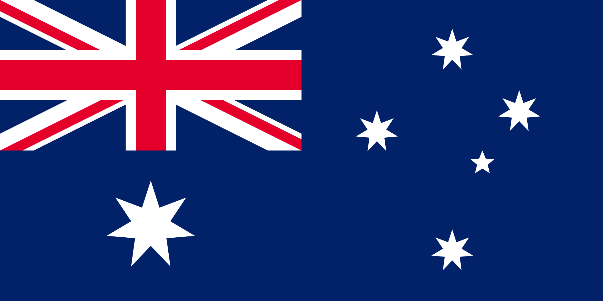

Australia, officially the Commonwealth of Australia, is a sovereign transcontinental country comprising the mainland of the Australian continent, the island of Tasmania, and numerous smaller islands.[13] With an area of 7,617,930 square kilometres (2,941,300 sq mi),[14] Australia is the largest country by area in Oceania and the world's sixth-largest country. Australia is the oldest,[15] flattest,[16] and driest inhabited continent,[17][18] with the least fertile soils.[19][20] It is a megadiverse country, and its size gives it a wide variety of landscapes and climates, with deserts in the centre, tropical rainforests in the north-east, and mountain ranges in the south-east. Indigenous Australians have inhabited the continent for approximately 65,000 years.[21] The European maritime exploration of Australia commenced in the early 17th century with the arrival of Dutch explorers. In 1770, Australia's eastern half was claimed by Great Britain and initially settled through penal transportation to the colony of New South Wales from 26 January 1788, a date which became Australia's national day. The European population grew steadily in subsequent decades, and by the time of an 1850s gold rush, most of the continent had been explored by European settlers and an additional five self-governing crown colonies established. On 1 January 1901, the six colonies federated, forming the Commonwealth of Australia. Australia has since maintained a stable liberal democratic political system and wealthy market economy.
